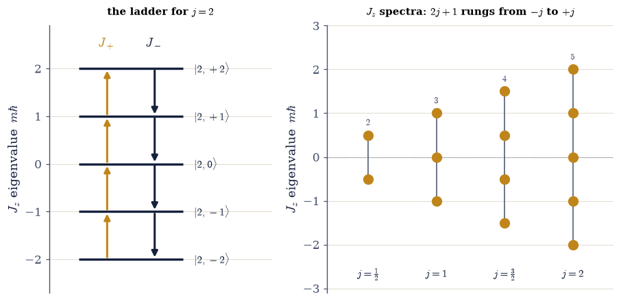
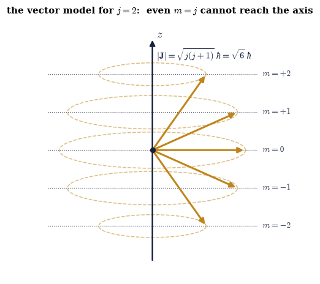

6.14 The Angular-Momentum Algebra#
Notebook overview#
Movement III opens by going back to the most elegant idea in the volume and using it again. In §6.12 the harmonic oscillator gave up its entire spectrum to a pair of ladder operators, with not a single derivative taken: from the one commutator \([a,a^{\dagger}]=1\), the equally-spaced levels followed by pure algebra. This notebook applies exactly that method to rotations, and the result is richer than the oscillator’s.
Angular momentum in quantum mechanics is not a formula to be looked up. It is defined by an algebra — the three components \(J_x,J_y,J_z\) satisfy \([J_i,J_j]=i\hbar\,\varepsilon_{ijk}J_k\), the quantum image of the everyday fact that rotations about different axes do not commute (turn a book about \(x\) then \(y\), then reverse the order: it ends up facing differently). Because the components do not commute, they are incompatible in the precise sense of §6.6 — no state can have all three sharp at once. But there is a special combination, the total \(J^2=J_x^2+J_y^2+J_z^2\), that does commute with each component, so the magnitude and one projection (conventionally \(J_z\)) can be simultaneously definite. Those shared eigenstates are the \(|j,m\rangle\), and finding their spectrum is the whole game.
We play it with the ladder operators \(J_\pm=J_x\pm iJ_y\), which raise and lower \(m\) exactly as \(a^{\dagger},a\) raised and lowered the oscillator’s quantum number. The ladder cannot run forever — the projection \(m\) is bounded by the magnitude — so it must terminate at a top and a bottom rung, and forcing it to close fixes everything: \(J^2=\hbar^2 j(j+1)\), \(J_z=\hbar m\) with \(m\) running from \(-j\) to \(+j\) in integer steps, hence \(2j+1\) rungs. And here is the surprise the oscillator never sprang on us: \(2j+1\) must be a positive integer, so \(j\) can be a half-integer — \(j=\tfrac12,\tfrac32,\dots\) — values no orbiting particle can have. The smallest of them, \(j=\tfrac12\), turns out to reproduce the Pauli matrices exactly: the spin-\(\tfrac12\) qubit of Movement I (§6.4–§6.8) is not an extra postulate bolted onto quantum mechanics. It is the smallest nonzero angular momentum, and the algebra of rotations demanded its existence.
As in every Volume VI notebook, each exercise opens with a crystal-clear statement and enumerated parts, each naming the exact operation — the explicit construction of \(J_\pm\) from the matrix elements
\(\hbar\sqrt{j(j+1)-m(m\pm1)}\), then \(J_x=(J_++J_-)/2\), \(J_y=(J_+-J_-)/2i\), \(J_z=\hbar\,\)numpy.diag(m),
the spectra read with numpy.linalg.eigvalsh, and every commutator a matrix product A@B - B@A.
Conventions and method notes. We keep \(\hbar\) explicit (set to \(1\) numerically, but written in every formula). For a given \(j\) the basis is \(|j,m\rangle\) with \(m\) ordered descending, \(m=j,j-1,\dots,-j\), so the matrices are \((2j+1)\times(2j+1)\) and \(J_z=\hbar\,\mathrm{diag}(j,\dots,-j)\). The raising and lowering operators \(J_\pm\) are non-Hermitian and mutual adjoints (\(J_-=J_+^{\dagger}\)); the components \(J_x,J_y,J_z\) and \(J^2\) are Hermitian. See Sakurai & Napolitano (§3.5–3.6, the algebraic construction); Nolting (angular momentum); and Notebooks §6.6 (the spin algebra, incompatibility, compatible observables), §6.12 (the ladder method for the oscillator), §6.2 (commuting operators share an eigenbasis), and §6.4–§6.8 (the qubit, here revealed as spin-\(\tfrac12\)).
Theory in brief#
The defining algebra#
Angular momentum is any triple of Hermitian operators obeying the commutation relations
This generalizes the spin algebra \([S_x,S_y]=i\hbar S_z\) of §6.6 and is the quantum image of the classical fact that finite rotations about different axes do not commute. Because the components do not commute, they are incompatible (§6.6): no state can have \(J_x,J_y,J_z\) all sharp at once.
The Casimir operator \(J^2\)#
The total squared angular momentum
commutes with each component (a few lines from Eq. 566). So \(J^2\) and one component — take \(J_z\) — form a compatible pair (§6.6) and share an eigenbasis: the simultaneous eigenstates \(|j,m\rangle\), labelled by the eigenvalues of \(J^2\) and \(J_z\). (\(J^2\) is a Casimir operator: constant across each irreducible rotation multiplet.)
The ladder operators#
Define the raising and lowering operators
They are non-Hermitian and mutual adjoints. The commutator \([J_z,J_\pm]=\pm\hbar J_\pm\) says \(J_+\) raises the \(J_z\) eigenvalue by \(\hbar\) and \(J_-\) lowers it: acting on \(|j,m\rangle\), \(J_\pm|j,m\rangle\propto|j,m\pm1\rangle\), while \([J^2,J_\pm]=0\) keeps \(j\) fixed. This is exactly the oscillator’s \(a^{\dagger}/a\) method (§6.12), now climbing a ladder of orientations instead of energies.
The spectrum from the algebra#
Because \(J^2-J_z^2=J_x^2+J_y^2\ge0\), the projection \(m\) is bounded, so the ladder must terminate: there is a top rung with \(J_+|j,j\rangle=0\) and a bottom with \(J_-|j,-j\rangle=0\). Working out the norms of \(J_\pm|j,m\rangle\) and demanding closure gives the entire spectrum,
with \(m=-j,-j+1,\dots,+j\) — exactly \(2j+1\) values. Note the magnitude \(\sqrt{j(j+1)}\,\hbar\) exceeds the largest projection \(j\hbar\): angular momentum can never point fully along an axis, for if it did all three components would be sharp, violating Eq. 566. This is the vector model — a tilted vector precessing about the axis it most nearly aligns with (Exercise 7).
Integer and half-integer \(j\)#
The ladder runs from \(-j\) to \(+j\) in unit steps, so it holds \(2j+1\) rungs, and
The integer values are orbital angular momentum (§6.15). The half-integer values have no orbital realization — they are spin. The smallest nonzero case, \(j=\tfrac12\), reproduces the Pauli matrices: \(J_x=\sigma_x/2,\;J_y=\sigma_y/2,\;J_z=\sigma_z/2\) (in units \(\hbar=1\)). So the two-state system of Movement I is spin-\(\tfrac12\) angular momentum, derived here from rotations rather than postulated. (Why half-integers need the rotation group’s double cover — the \(4\pi\) periodicity of spinors glimpsed on the Bloch sphere of §6.8 — is a horizon flagged in the Outlook.)
Constructing the matrices for any \(j\)#
With the matrix elements of Eq. 569 we build, for any \(j\),
explicit \((2j+1)\times(2j+1)\) matrices — the reusable building blocks for spin systems (§6.18), the addition of angular momenta (§6.19), and rotations of quantum states.
Setup#
Data and instruments only: the series palette, the numerical value of \(\hbar\), the commutator
\([A,B]=AB-BA\) already met in §6.2 and
§6.6, and two pieces of bookkeeping for the descending
\(|j,m\rangle\) convention — the ladder of \(m\) values and the index at which a given
\(|j,m\rangle\) sits. The object this notebook is named for, the explicit construction of
\(J_x,J_y,J_z,J^2,J_\pm\) for an arbitrary \(j\), is deliberately absent: you write
angular_momentum_matrices in Exercise 1, and every later exercise runs on the one you wrote.
The Setup below holds this notebook’s data and instruments — nothing you are asked to build. It is collapsed so the building stays yours; expand it whenever you want the details.
Exercise 1 — The angular-momentum algebra#
The defining commutation relations \([J_x,J_y]=i\hbar J_z\) and its cyclic partners Eq. 566 are the definition of angular momentum; everything else in the notebook follows from them. Checking them numerically needs the matrices themselves, and Eq. 569 already hands over every entry. In the \(|j,m\rangle\) basis with \(m\) ordered descending (\(m=j,j-1,\dots,-j\)) the matrices are \((2j+1)\times(2j+1)\) and \(J_z=\hbar\,\mathrm{diag}(m)\); the ladder operators carry the single nonzero element per column \(\langle j,m\pm1|J_\pm|j,m\rangle=\hbar\sqrt{j(j+1)-m(m\pm1)}\), which in the descending convention places \(J_+\) one row above the diagonal and \(J_-\) one row below; and from those, \(J_x=(J_++J_-)/2\), \(J_y=(J_+-J_-)/2i\), \(J^2=J_x^2+J_y^2+J_z^2\) Eq. 571. This one construction is the workbench for the whole notebook — every later exercise runs on it.
Write
angular_momentum_matrices(j, hbar=HBAR), returningJx, Jy, Jz, J2, Jp, Jmas complex \((2j+1)\times(2j+1)\) arrays built from the matrix elements above, valid for integer and half-integer \(j\) alike. Write this one yourself — the implementation is the lesson.Build \(J_x,J_y,J_z\) for, say, \(j=1\).
Compute the three commutators \([J_x,J_y]\), \([J_y,J_z]\), \([J_z,J_x]\) with the
commutatorhelper (each a matrix productA@B - B@A).Confirm they equal \(i\hbar J_z\), \(i\hbar J_x\), \(i\hbar J_y\) with
numpy.allclose.Note this is the same algebra as the spin \([S_x,S_y]=i\hbar S_z\) of §6.6, now for arbitrary \(j\). The algebra defines angular momentum.
j = 1 angular-momentum matrices (3×3):
[Jx, Jy] = iℏ Jz ? True
[Jy, Jz] = iℏ Jx ? True
[Jz, Jx] = iℏ Jy ? True
the full algebra holds: True
(the §6.6 spin algebra [Sx,Sy]=iℏSz is the j=½ case of this)
Validation 1#
✓ the constructed matrices satisfy the angular-momentum algebra [Jx,Jy]=iℏJz and cyclic — the definition of angular momentum
True
Exercise 2 — The Casimir operator \(J^2\)#
Show that the total squared angular momentum \(J^2=J_x^2+J_y^2+J_z^2\) commutes with every component, so \(J^2\) and \(J_z\) are a compatible pair and share the \(|j,m\rangle\) eigenbasis Eq. 567.
Form \(J^2=J_x^2+J_y^2+J_z^2\) by matrix products (
Jx@Jx + Jy@Jy + Jz@Jz, already returned by theangular_momentum_matricesyou wrote in Exercise 1).Compute \([J^2,J_z]\) and \([J^2,J_x]\) with the
commutatorhelper.Confirm both vanish with
numpy.allcloseagainst the zero matrix.Conclude (§6.2, §6.6): because they commute, \(J^2\) and \(J_z\) can be simultaneously diagonalized — the shared eigenstates are the \(|j,m\rangle\). The magnitude and one projection can be sharp together, but not two projections.
j = 3/2: J² = Jx² + Jy² + Jz² (4×4)
‖[J², Jx]‖ = 0.0
‖[J², Jz]‖ = 0.0
J² commutes with every component: True
→ J² and Jz share an eigenbasis: the simultaneous eigenstates |j,m⟩ (§6.2, §6.6)
Validation 2#
✓ J² commutes with each component ([J²,Jᵢ]=0), so J² and Jz share the |j,m⟩ eigenbasis [max|Δ| = 0 (rtol=1e-06, atol=1e-12)]
True
Exercise 3 — The ladder operators#
Build the raising and lowering operators \(J_\pm=J_x\pm iJ_y\) and verify they raise and lower \(m\) by one unit, with the coefficient \(\hbar\sqrt{j(j+1)-m(m\pm1)}\), and that they annihilate the top and bottom rungs Eq. 568, Eq. 569.
Take \(J_\pm=J_x\pm iJ_y\) (returned as
Jp,Jmby your Exercise 1angular_momentum_matrices).Verify the ladder commutators \([J_z,J_\pm]=\pm\hbar J_\pm\) and \([J^2,J_\pm]=0\) with the
commutatorhelper andnumpy.allclose.Apply \(J_+\) to a chosen \(|j,m\rangle\) (a unit basis vector) and read off the result: it lands on \(|j,m+1\rangle\) with coefficient \(\hbar\sqrt{j(j+1)-m(m+1)}\).
Confirm \(J_+|j,j\rangle=0\) (top) and \(J_-|j,-j\rangle=0\) (bottom): the ladder terminates — the oscillator’s ladder method (§6.12), now climbing orientations.
j = 2.0: [Jz, J+] = +ℏJ+ ? True [Jz, J−] = −ℏJ− ? True [J², J+] = 0 ? True
J+|2,0⟩ lands on |2,1⟩ with coefficient 2.4495
formula ℏ√(j(j+1)−m(m+1)) at m=0 gives √6 = 2.4495
J+|j,+j⟩ = 0 (top rung)? True J−|j,−j⟩ = 0 (bottom rung)? True
Validation 3#
✓ J± raise/lower m by one unit with coefficient ℏ√(j(j+1)−m(m±1)), satisfy [Jz,J±]=±ℏJ± and [J²,J±]=0, and annihilate the top/bottom rungs
True
Exercise 4 — The spectrum from the ladder#
Read off the eigenvalues of \(J^2\) and \(J_z\) and confirm the algebra’s central predictions: a single magnitude \(J^2=\hbar^2 j(j+1)\) and an evenly-spaced ladder of projections \(J_z=\hbar m\), \(m=-j,\dots,+j\), exactly \(2j+1\) of them Eq. 569. This is the payoff — the entire spectrum from the commutation relations alone, no coordinates and no differential equation.
For each \(j\in\{\tfrac12,1,\tfrac32,2\}\) build the matrices with your Exercise 1
angular_momentum_matricesand diagonalize \(J^2\) withnumpy.linalg.eigvalsh— find the single repeated eigenvalue \(\hbar^2 j(j+1)\).Diagonalize \(J_z\) the same way (or read its diagonal): the eigenvalues are \(\hbar m\), \(m=-j,\dots,j\).
Confirm there are \(2j+1\) of them.
Note \(\sqrt{j(j+1)}>j\): the magnitude exceeds the maximum projection, so the vector cannot align fully with any axis. The spectrum follows from the algebra alone.
j J² eigenvalue ℏ²j(j+1) Jz eigenvalues (ℏm) 2j+1
--------------------------------------------------------------------------
0.5 0.750 0.750 +0.5 -0.5 2
1.0 2.000 2.000 +1.0 +0.0 -1.0 3
1.5 3.750 3.750 +1.5 +0.5 -0.5 -1.5 4
2.0 6.000 6.000 +2.0 +1.0 +0.0 -1.0 -2.0 5
all spectra match J²=ℏ²j(j+1), Jz=ℏm: True
magnitude √(j(j+1)) exceeds the top projection j for every j → no full alignment with an axis
Validation 4#
✓ the spectrum follows from the algebra: J²=ℏ²j(j+1) and Jz=ℏm with m=−j…j (2j+1 states) [max|Δ| = 8.88178e-16 (rtol=1e-12, atol=1e-09)]
True

Fig. 548 The whole spectrum, from the algebra alone. Left: the ladder of \(J_z\) eigenstates \(|j,m\rangle\) for \(j=2\), drawn as rungs at heights \(m\hbar\). The raising operator \(J_+\) (amber, up) and lowering operator \(J_-\) (ink, down) step between adjacent rungs with coefficient \(\hbar\sqrt{j(j+1)-m(m\pm1)}\), and the ladder closes: \(J_+\) annihilates the top rung and \(J_-\) the bottom, which is exactly what forces the spectrum to be finite. Right: the \(J_z\) spectra for \(j=\tfrac12,1,\tfrac32,2\) — each a column of \(2j+1\) equally-spaced projections from \(-j\hbar\) to \(+j\hbar\). The half-integer columns (\(j=\tfrac12,\tfrac32\)) sit on half-integer rungs: these are the spin values, with no orbital counterpart, demanded into existence by the closure of the ladder (Exercise 5). Nothing here used a coordinate or a wave function — only the commutation relations.#
Exercise 5 — Integer and half-integer \(j\)#
Explain why \(j\) must be integer or half-integer, and exhibit the half-integer case: show that \(j=\tfrac12\) reproduces the Pauli matrices over two, so the qubit of Movement I is spin- \(\tfrac12\), the smallest nonzero angular momentum Eq. 570.
Recall the counting argument: the ladder steps from \(-j\) to \(+j\) in unit steps, so it has \(2j+1\) rungs, and a count of rungs must be a positive integer — hence \(2j+1\in\mathbb{Z}^+\) and \(j\in\{0,\tfrac12,1,\tfrac32,\dots\}\).
Build the \(j=\tfrac12\) matrices with your Exercise 1
angular_momentum_matrices(0.5).Compare to the Pauli matrices over two (\(\sigma_x/2,\sigma_y/2, \sigma_z/2\)) with
numpy.allclose.Conclude: the two-state system of §6.4–§6.8 is spin-\(\tfrac12\) angular momentum, derived from the algebra rather than postulated; the integer \(j\) are orbital (§6.15). Half-integer spin emerges from the closure of the ladder — the surprise of the notebook.
allowed j: [0. 0.5 1. 1.5 2. 2.5]
2j+1 (rung count): [1 2 3 4 5 6] — all positive integers
j = ½ matrices vs the Pauli matrices over two:
Jx = σx/2 ? True
Jy = σy/2 ? True
Jz = σz/2 ? True
→ the qubit of Movement I (§6.4–§6.8) IS spin-½, the smallest nonzero angular momentum, derived here
Validation 5#
✓ ladder closure forces 2j+1 to be a positive integer (so j is integer or half-integer), and j=½ reproduces the Pauli matrices over two — the spin-½ qubit
True
Exercise 6 — Matrices for arbitrary \(j\): a reusable tool#
Assemble the full set of angular-momentum matrices for a chosen \(j\) and verify their internal consistency — the algebra, Hermiticity, the adjoint relation \(J_-=J_+^{\dagger}\), and \(J^2=\hbar^2 j(j+1)\mathbb{1}\) — confirming the construction is correct for any \(j\) Eq. 571.
For a half-integer and an integer case (say \(j=\tfrac32\) and \(j=2\)) build \(J_x,J_y,J_z,J^2,J_\pm\) with your Exercise 1
angular_momentum_matrices.Verify the algebra \([J_x,J_y]=i\hbar J_z\) and \(J^2=\hbar^2 j(j+1)\mathbb{1}\) (
numpy.allcloseagainstj*(j+1)*numpy.eye).Confirm \(J_x,J_y,J_z\) are Hermitian (
numpy.allclose(A, A.conj().T)) and that \(J_-=J_+^{\dagger}\).Note these matrices are the reusable building blocks for spin in fields (§6.18) and the addition of angular momenta (§6.19). What you wrote in Exercise 1 is a general-purpose construction, correct for every \(j\).
j = 1.5 (4×4): algebra=True J²=ℏ²j(j+1)·1=True Hermitian=True J−=J+†=True
j = 2.0 (5×5): algebra=True J²=ℏ²j(j+1)·1=True Hermitian=True J−=J+†=True
the construction is internally consistent for every j tested: True
(these matrices are the building blocks for spin systems, §6.18, and angular-momentum addition, §6.19)
Validation 6#
✓ the angular-momentum matrices can be built for any j: they satisfy the algebra, are Hermitian (J± mutual adjoints), and give J²=ℏ²j(j+1)
True
Exercise 7 — Expectation values, uncertainty, and the vector model (student)#
In the maximally-aligned state \(|j,j\rangle\) (top of the ladder, \(J_z\) as sharp as it can be), compute \(\langle J_x\rangle,\langle J_y\rangle,\langle J_x^2\rangle,\langle J_y^2\rangle\) and the uncertainty product \(\Delta J_x\,\Delta J_y\), and interpret the result geometrically as the vector model Eq. 569, Eq. 566.
For, say, \(j=2\), build the matrices with your Exercise 1
angular_momentum_matricesand form the \(|j,j\rangle\) state (the first basis vector in the descending convention).Compute the expectation values \(\langle O\rangle=\psi^{\dagger}O\psi\): find \(\langle J_x\rangle=\langle J_y\rangle=0\) but \(\langle J_x^2\rangle=\langle J_y^2\rangle=\hbar^2 j/2>0\).
Form the uncertainties \(\Delta J_x=\sqrt{\langle J_x^2\rangle-\langle J_x\rangle^2}\) and likewise \(\Delta J_y\), and check the §6.6 uncertainty relation \(\Delta J_x\,\Delta J_y\ge\tfrac12|\langle J_z\rangle|\) — it is saturated here.
Interpret: \(J_z\) is sharp at \(j\hbar\), but \(J_x,J_y\) are spread, so the angular-momentum vector of length \(\sqrt{j(j+1)}\,\hbar\) cannot point straight up — it lies on a cone, precessing about \(z\). This is the vector model, and the reason a quantum spin never fully aligns.
state |2,2⟩ (maximally aligned):
⟨Jx⟩ = 0.000, ⟨Jy⟩ = 0.000 (zero by symmetry)
⟨Jx²⟩ = ⟨Jy²⟩ = 1.000 (= ℏ²j/2 = 1.000, nonzero transverse spread)
⟨Jz⟩ = 2.000 = jℏ (sharp)
uncertainty product ΔJx·ΔJy = 1.0000
uncertainty bound ½|⟨Jz⟩| = 1.0000 → relation saturated: True
magnitude √(j(j+1))ℏ = 2.449 > max projection jℏ = 2.0
→ the vector cannot point fully along z: it lies on a cone (the vector model)
Validation 7#
✓ even the most aligned state |j,j⟩ has ⟨Jx⟩=⟨Jy⟩=0 with nonzero transverse spread ⟨Jx²⟩=ℏ²j/2, saturating ΔJxΔJy≥½|⟨Jz⟩| — the vector model
True

Fig. 549 The vector model: angular momentum on a cone. For \(j=2\), each allowed projection \(m\) (the dashed levels, \(J_z=m\hbar\)) corresponds to an angular-momentum vector of fixed length \(|\mathbf{J}|=\sqrt{j(j+1)}\,\hbar=\sqrt6\,\hbar\) (amber) tilted so its shadow on the \(z\)-axis is exactly \(m\hbar\). Crucially the longest projection, \(m=j=2\), still falls short of the magnitude \(\sqrt6\approx2.449\), so even the most aligned vector tilts about \(35^\circ\) off the axis and cannot lie flat along \(z\). The transverse components \(J_x,J_y\) are not zero but merely undetermined — the vector precesses around the dashed cone, its tip anywhere on the circle. This is the geometric face of incompatibility (§6.6): pin down \(J_z\) and the other two components blur into a ring. The classical picture of a definite spinning vector is the \(j\to\infty\) limit, where \(\sqrt{j(j+1)}\to j\) and the cone closes onto the axis.#
Exercise 8 — The structure of rotations, and the origin of spin (synthesis)#
We wrote down three operators that refuse to commute — nothing more than \([J_i,J_j]=i\hbar\, \varepsilon_{ijk}J_k\) — and from that single fact, with the same ladder that solved the oscillator in §6.12, the entire spectrum of angular momentum fell out: magnitudes \(\hbar\sqrt{j(j+1)}\), projections \(\hbar m\), and the demand that the ladder close, which forced \(j\) to be integer or half-integer. We never integrated anything; we never wrote a wave function. The algebra alone fixed what rotations are allowed to do.
The half-integers were the surprise. They have no orbital meaning — you cannot build \(j=\tfrac12\) from a particle going around a loop — yet the algebra insisted on them, and the smallest, \(j=\tfrac12\), reproduced the Pauli matrices exactly. The two-state system we spent all of Movement I on is therefore not a separate piece of physics: it is the smallest nonzero angular momentum, spin-\(\tfrac12\), derived here rather than postulated.
There is no new computation here; the structure is the result. Movement III now splits along the seam this notebook exposed. The next notebook (§6.15) builds the integer case as orbital angular momentum — the spherical harmonics that shape every atomic orbital, realized as functions on the sphere — reusing the real-spherical-harmonic machinery of Volume III. Later we return to spin in magnetic fields (§6.18) and to the addition of two angular momenta (§6.19), and the two strands — orbital and spin — braid together at the summit of the volume, the hydrogen atom (§6.17), where \(J^2\) and \(J_z\) label every orbital.
There is no picture you can draw of a spin-\(\tfrac12\) particle’s rotation: turn it through \(360^\circ\) and it is not the same state — you must turn it twice, through \(720^\circ\), to bring it home (the \(4\pi\) periodicity glimpsed on the Bloch sphere of §6.8). We did not assume this. The algebra of rotations, taken seriously, produced a kind of angular momentum the spinning world around us never shows — and matter, every electron and proton and neutron in it, is made of exactly this.
Notebook summary#
Angular momentum, defined by an algebra and solved by a ladder — the opening of Movement III.
The defining algebra Eq. 566: \([J_i,J_j]=i\hbar\,\varepsilon_{ijk}J_k\). The components are incompatible (§6.6); this is the definition of angular momentum.
The Casimir Eq. 567: \(J^2\) commutes with every component, so \(J^2\) and \(J_z\) are compatible and share the \(|j,m\rangle\) eigenbasis.
The ladder Eq. 568: \(J_\pm=J_x\pm iJ_y\) with \([J_z,J_\pm]=\pm\hbar J_\pm\) raise and lower \(m\) — the oscillator’s method (§6.12), now for rotations.
The spectrum Eq. 569: from closure alone, \(J^2=\hbar^2 j(j+1)\) and \(J_z=\hbar m\), \(m=-j,\dots,j\) — and \(\sqrt{j(j+1)}>j\) (the vector model cone).
Integer and half-integer \(j\) Eq. 570: \(2j+1\in\mathbb{Z}^+\), so half-integers are allowed — and \(j=\tfrac12\) is the Pauli/2 qubit of Movement I, derived.
A reusable construction Eq. 571: explicit \((2j+1)\times(2j+1)\) matrices for any \(j\) (
numpy.diag, the \(J_\pm\) matrix elements,numpy.linalg.eigvalsh), the building blocks for spin and angular-momentum coupling.
Three non-commuting operators, one ladder, and out came every allowed angular momentum — including the half-integer spin the classical world never hinted at. The qubit was the smallest rotation all along.
Outlook#
Orbital angular momentum and the spherical harmonics (§6.15): the integer-\(j\) case, realized as functions on the sphere, reusing the Volume III real-spherical-harmonic machinery.
The hydrogen atom (§6.17): where \(J^2\) and \(J_z\) label the orbitals and the algebra meets the Coulomb potential.
Spin in magnetic fields (§6.18) and the addition of two angular momenta with Clebsch–Gordan coefficients (§6.19) — both built directly on the matrices of this notebook.
The double cover of the rotation group and the \(4\pi\) periodicity of spinors (a horizon; the §6.8 Bloch double-cover made this visible).
Cross-reference §6.6 (the spin algebra, incompatibility, the Casimir/compatible observables), §6.12 (the ladder method for the oscillator), §6.2 (commuting operators share an eigenbasis), §6.4–§6.8 (the qubit, now derived as spin-\(\tfrac12\)), and forward to §6.15, §6.17, §6.18, §6.19.